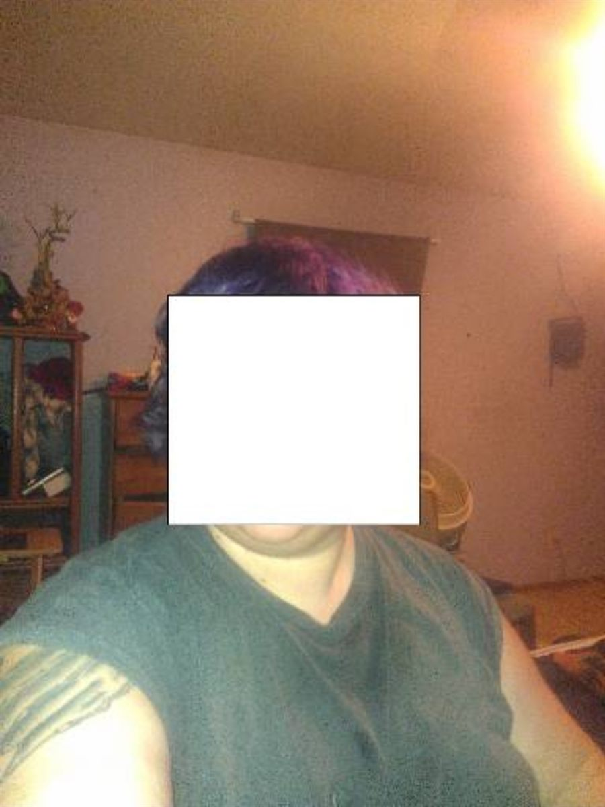
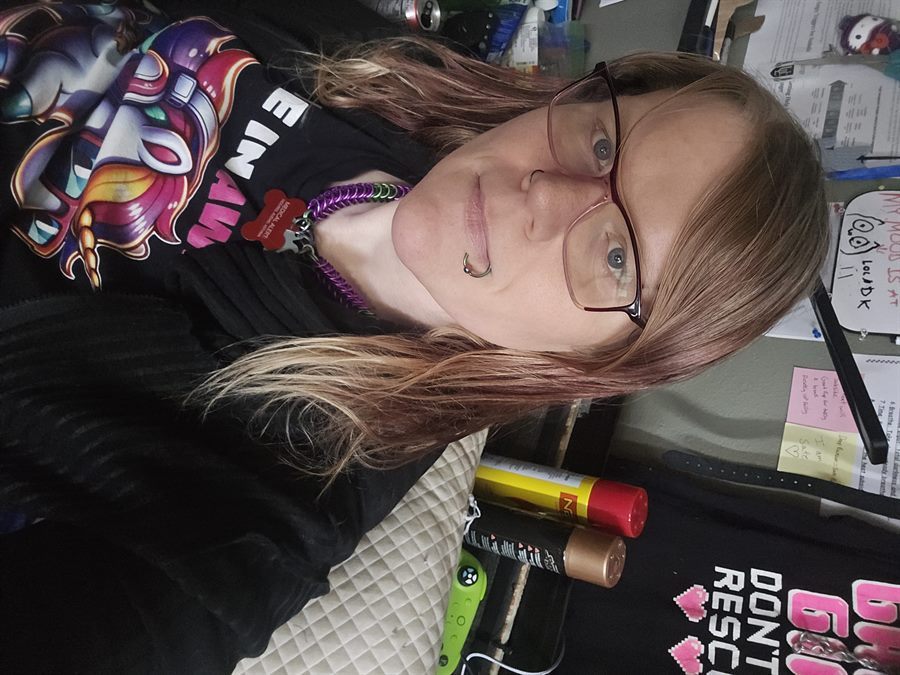
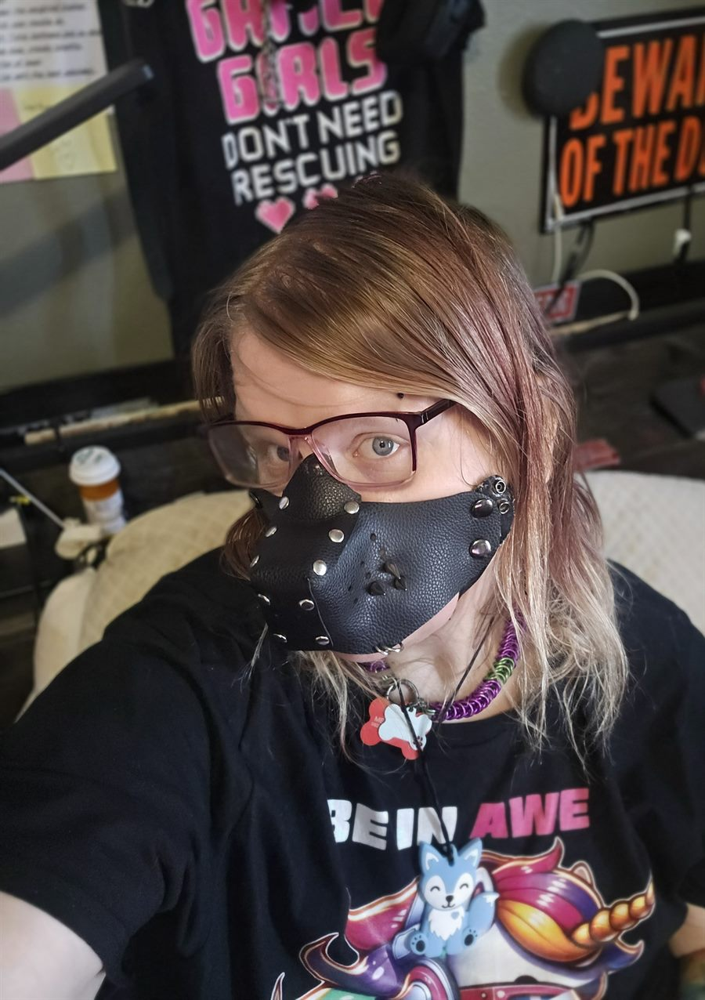
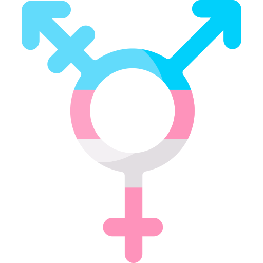
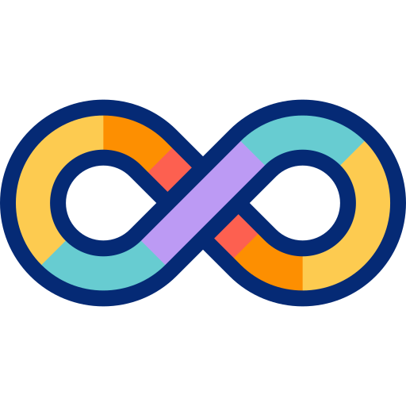

🦴🐾Literal Thinking | Technical Precision🐾🦴

I am a highly detail-oriented professional with a unique cognitive profile that favors pattern recognition, literal interpretation, and technical consistency.
As a neurodivergent individual, I possess a 'sensory superpower' for identifying subtle inconsistencies and logical glitches that others often overlook. I apply a 'measure twice, cut once' philosophy—a discipline I’ve refined through the long-term management of my own health data.
